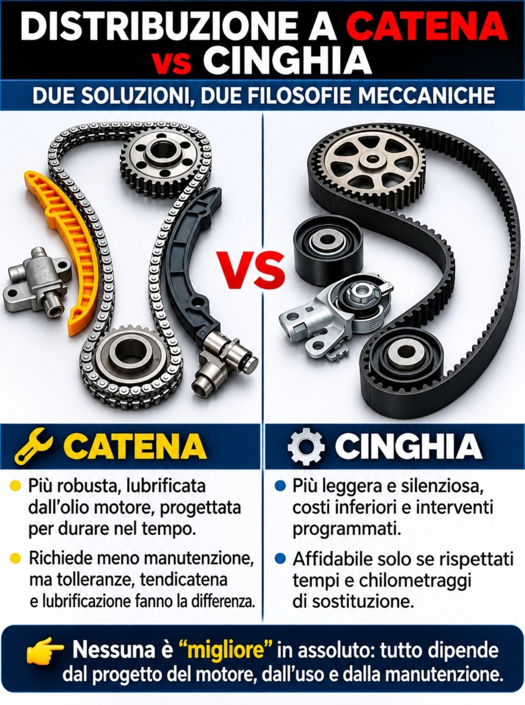

25NOV
Distribuzione a catena o a cinghia?
ULTIMO CONSIGLIO
Due soluzioni, due filosofie meccaniche: ecco le differenze in breve.
- Catena: più robusta, lubrificata dall’olio motore e progettata per durare nel tempo. Richiede meno manutenzione, ma tolleranze, tendicatena e lubrificazione fanno la differenza.
- Cinghia: più leggera e silenziosa, con costi inferiori e interventi programmati. È affidabile solo se si rispettano tempi e chilometraggi di sostituzione.
Nessuna è “migliore” in assoluto: tutto dipende dal progetto del motore, dall’uso e dalla manutenzione. Per sapere come comportarti con la tua auto, controlla il piano di manutenzione o chiedi a noi.
Chiedi un controllo della distribuzione